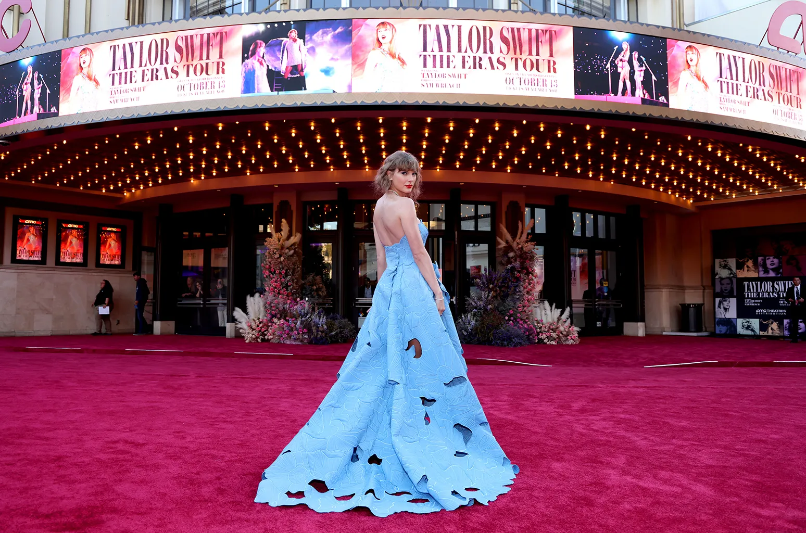
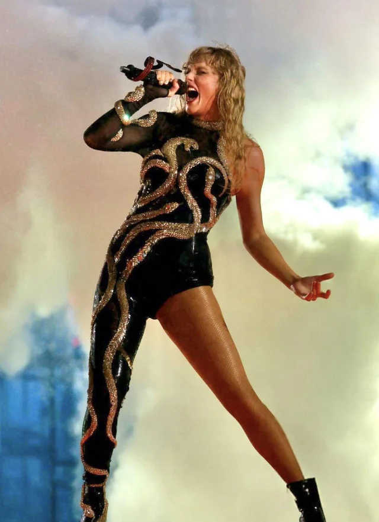
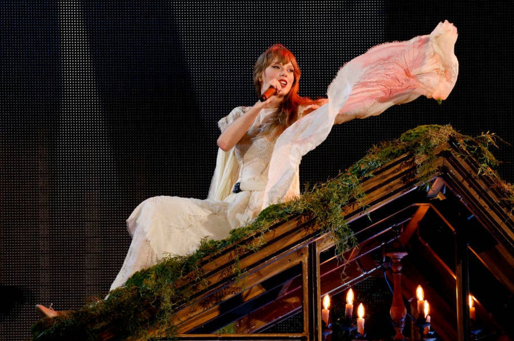
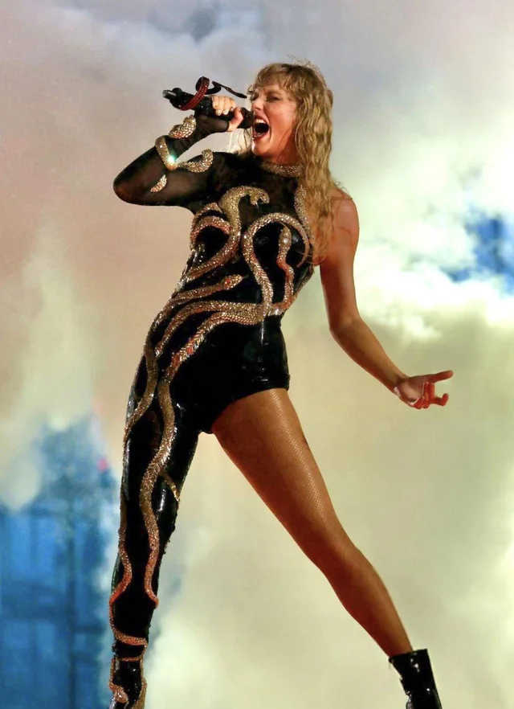
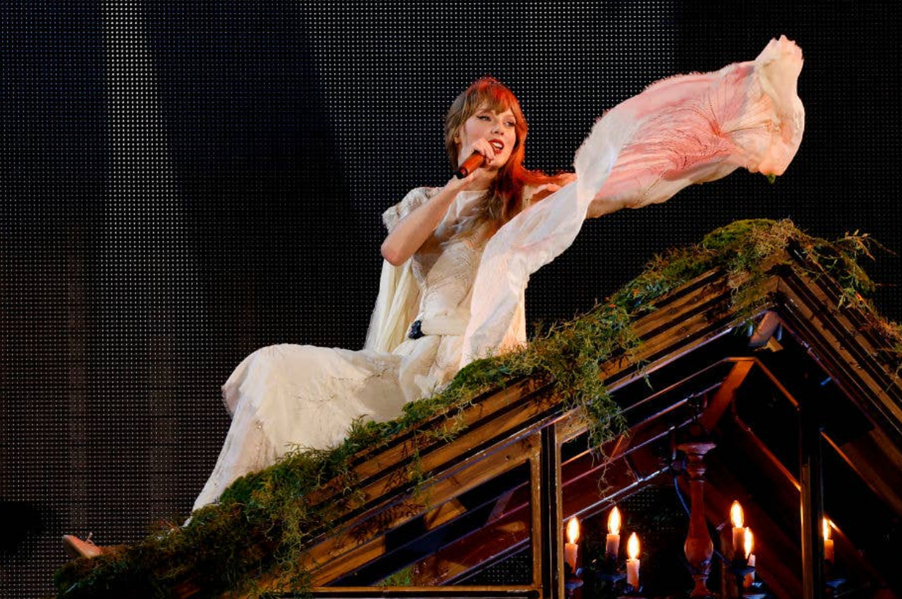

About Taylor

Taylor Swift is a global music icon, celebrated for her storytelling, artistry, and ever-evolving style. From her country roots to her pop reinvention and folk storytelling, Taylor has won the hearts of millions across the world.
- Birthday: December 13, 1989
- Hometown: Reading, Pennsylvania
- Albums: 11 Studio Albums, countless hits!
- Fun Fact: Taylor has a cat named Olivia Benson and Meredith Grey, named after the TV character's from Law & Order: SVU and Grey's Anatomy.
Gallery


 


